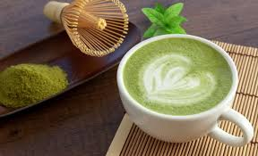

Matcha, yeşil çay yapraklarının gölgede yetiştirilip, kurutulduktan sonra taş değirmenlerde pürüzsüz bir toz haline getirilmesiyle elde edilen, Japon çay kültürünün en kıymetli üyesidir.
Standart bitki çayları gibi yaprakları sıcak suda demlenip süzülmez; toz halindeki çay doğrudan suya veya süte karıştırılarak tamamen tüketilir.
Bu sayede normal bir yeşil çaya göre çok daha yüksek oranda antioksidan (özellikle L-Theanine) ve kafein barındırır.
Vücuda hem uzun süreli ve dingin bir enerji verir hem de odaklanmayı artırır.
İyi bir matcha canlı, parlak ve elektrik yeşili bir renge sahiptir. Eğer rengi mat, sarımtırak veya kahverengiye dönükse bayattır ya da kalitesizdir.
Kaliteli matchanın kokusu taze biçilmiş çimen gibi ferah, tadı ise hafif tatlımsı ve pürüzsüzdür. Çok acı ve buruk bir tat, kalitesiz (mutfak tipi) matcha olduğunu gösterir.
Genellikle "daha fazla su varsa daha hafiftir" diye düşünülür ancak Lungo’da durum tam tersidir.
Su, kahve posasıyla daha uzun süre temas ettiği için, çekirdeğin derinliklerinde kalan acımsı (bitter) aromaları ve daha fazla kafeini de fincana taşır.
Bu yüzden Lungo, espressodan hacim olarak daha büyük ama tat olarak daha acı, buruk ve yüksek kafeinli bir kahvedir.
Matcha geleneksel olarak bambu bir karıştırıcı (Chasen) ile suyla köpürtülür. Ancak evinizde bu yoksa küçük bir el mikseri (süt köpürtücü mini çırpıcılar) kullanarak da harika sonuçlar alabilirsiniz.
Eleme Yapın:
1.Eleme Yapın:1 dk.1 çay kaşığı matcha tozunu küçük bir kaseye eleyerek koyun. Matcha çok ince yapılı olduğu için çabuk topaklanır, elemek pürüzsüzlük için şarttır.
2.Sıcak Suyu Ekleyin:1 dk.Üzerine yaklaşık yarım çay bardağı sıcak su (75 derece) ekleyin.
3.Köpürtün (W Hareketi):1 dk.Bambu çırpıcı veya mini el mikseri ile dairesel hareketler yerine "W" veya "M" harfi çizer gibi hızlıca çırpın. Üzerinde yoğun, küçük baloncuklardan oluşan yeşil bir köpük tabakası belirdiğinde çayınız hazırdır.
Kafelerde içtiğiniz o hafif tatlı, kremamsı Matcha Latte'yi evde yapmak aslında çok pratiktir.
Gerekli Malzemeler
1.Matcha Özünü Hazırlayın:1 dk.Geniş bir kupaya elediğiniz matchayı ve 3-4 yemek kaşığı sıcak suyu ekleyin. Mini çırpıcıyla topak kalmayana kadar iyice köpürtün. (Tatlandırıcı ekleyecekseniz balı bu aşamada karışıma katın).
2.Sütü Hazırlayın:2 dk.Sütü bir cezvede ısıtın. Dilerseniz kavanoza koyup sallayarak veya French press kullanarak hafifçe köpürtün (tıpkı latte yapar gibi).
3.Birleştirin:1 dk.Hazırladığınız yeşil matcha özünün üzerine sıcak sütü yavaşça dökün. Kadifemsi yeşil-beyaz dokusuyla Matcha Latte'niz hazır!
Yaz Ayları İçin Küçük Bir Dokunuş: Aynı tarifi, bardağa sıcak süt yerine bolca buz ve soğuk süt koyup, üzerine hazırladığınız sıcak matcha özünü dökerek nefis bir Iced Matcha Latte'ye dönüştürebilirsiniz!